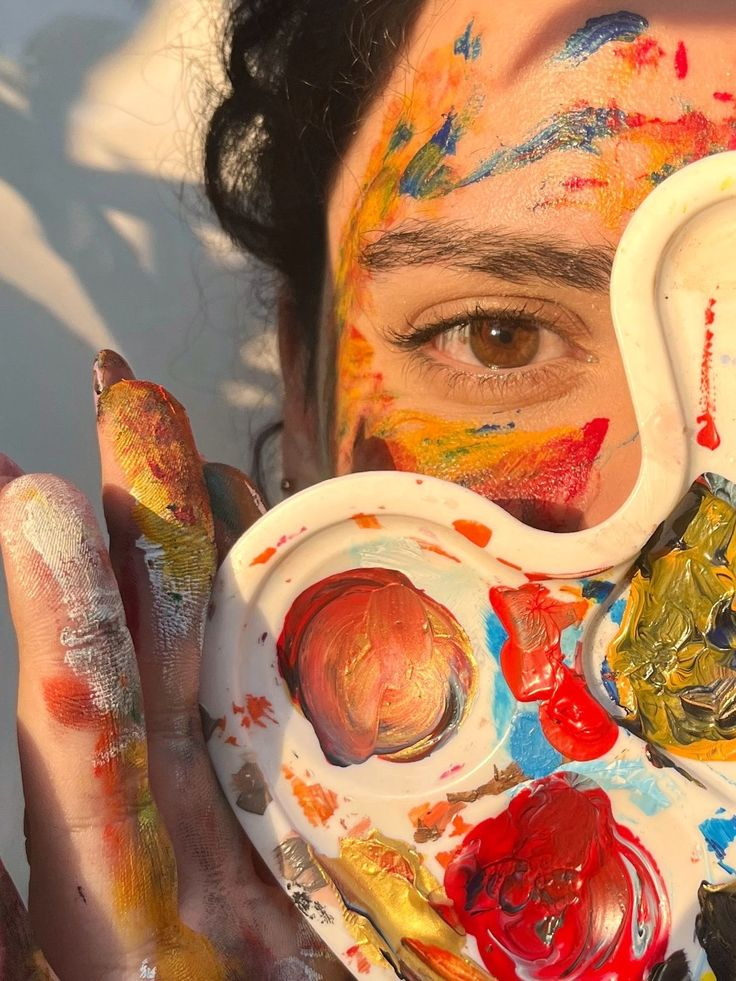

Una obra maestra que va más allá de ser un cuento infantil. A través de la historia de un pequeño príncipe que viaja por diferentes planetas, el autor nos invita a reflexionar sobre la amistad, el amor, la soledad y lo verdaderamente importante en la vida.
Reflexión: Nos recuerda que debemos ver con el corazón y valorar las cosas simples que realmente importan: las relaciones humanas, la autenticidad y la capacidad de asombrarnos como niños.
La historia de Santiago, un joven pastor que emprende un viaje en busca de su leyenda personal. A través de su travesía por el desierto, descubre verdades profundas sobre la vida, el destino y la importancia de seguir nuestros sueños.
Reflexión: Nos inspira a perseguir nuestros sueños con valentía, recordándonos que el universo conspira a nuestro favor cuando seguimos nuestro corazón y que el viaje es tan importante como el destino.
Tema: Psicología cognitiva, gestión de pensamientos, bienestar emocional.
Este libro se basa en la psicología cognitiva para enseñarnos cómo los pensamientos distorsionados generan sufrimiento innecesario. Con un lenguaje accesible y ejemplos cotidianos, Santandreu muestra cómo cambiar nuestros esquemas mentales puede mejorar profundamente nuestra calidad de vida emocional.
Mensaje clave: No es lo que nos pasa, sino cómo interpretamos lo que nos pasa, lo que determina nuestra felicidad.
Tema: Mindfulness, compasión, afrontamiento del dolor emocional.
Con profunda sabiduría budista adaptada al mundo occidental, esta monja tibetana enseña cómo enfrentar los momentos de crisis desde la presencia, la amabilidad y la aceptación del sufrimiento. Es especialmente útil para quienes atraviesan momentos difíciles.
Reflexión: Cuando todo se derrumba, tenemos la oportunidad de descubrir quiénes somos realmente.
Técnica: Óleo sobre lienzo | Ubicación: Museo de Arte Moderno (MoMA), Nueva York
Una de las obras más emblemáticas del posimpresionismo. Muestra un cielo nocturno en turbulencia sobre el pueblo de Saint-Rémy-de-Provence, pintado desde la ventana del hospital psiquiátrico donde Van Gogh estaba internado.
Reflexión: Las espirales luminosas y pinceladas enérgicas capturan tanto la belleza del universo como el caos interior del artista. Nos enseña que incluso en los momentos más oscuros, podemos encontrar belleza y expresión. Una obra que transforma la noche en un torbellino de emociones y esperanza luminosa.

Técnica: Temple, óleo y pastel sobre cartón | Ubicación: Galería Nacional y Museo Munch, Oslo
Una imagen universal del miedo, la ansiedad y la desesperación. Una figura andrógina grita mientras el cielo parece arder al fondo. Munch se inspiró en un paseo donde sintió un grito infinito atravesar la naturaleza.
Reflexión: El uso de color y forma transmite una emoción pura y brutal que sigue siendo relevante en la era moderna, representando la angustia existencial que todos experimentamos. Un eco visual del malestar humano que trasciende generaciones.
Técnica: Óleo sobre lienzo | Ubicación: Museo del Prado, Madrid
Una obra maestra del Barroco español que no es solo un retrato de la infanta Margarita, sino un enigma visual que juega con la mirada, la perspectiva y el rol del artista. Velázquez se retrata pintando dentro de la escena, y en un espejo al fondo aparecen los reyes.
Reflexión: Una reflexión sofisticada sobre la representación, el poder y el arte mismo. Un cuadro que nos obliga a preguntarnos: ¿a quién estamos realmente mirando?
Especializado en arte originario y popular de las tierras bajas, preserva y exhibe textiles, cerámica, tallado en madera y arte plumario de 14 etnias del oriente boliviano.
📍 Dirección: Calle Libertad esq. Potosí, Santa Cruz de la Sierra
🗺️ Ver ubicación: Abrir en Google Maps
🎯 Destacado: Artesanía de tejidos y hamacas de comunidades originarias
✨ Ideal para: Conocer expresiones culturales vivas del oriente boliviano
Centro científico de referencia en Bolivia, con impresionantes colecciones de flora, fauna y paleontología. Cuenta con más de 50,000 especímenes botánicos y 135,000 insectos.
📍 Dirección: Av. Irala 565, entre calles Ejército Nacional y Potosí
🗺️ Ver ubicación: Abrir en Google Maps
🎯 Destacado: Aves, reptiles, mamíferos, peces y fósiles (incluido un megaterio)
✨ Ideal para: Educación ambiental y científica, visitas guiadas especializadas
Ubicado en la histórica Casa de los Tres Pavos cerca de la Plaza 24 de Septiembre. Exhibe más de 300 obras de arte boliviano contemporáneo: pintura, escultura y grabado.
📍 Dirección: Calle Sucre No. 32, entre René Moreno y Potosí
🗺️ Ver ubicación: Abrir en Google Maps
🎯 Destacado: Exposiciones temporales, talleres de arte, Noche de Museos
✨ Ideal para: Amantes del arte contemporáneo y eventos culturales
Instalado en una elegante casa Art Nouveau (1915-1920). Alberga exposiciones sobre arqueología local, cultura chiquitana y archivo histórico con documentos desde el siglo XIX.
📍 Dirección: Calle Junín No. 154, entre Ayacucho y Potosí
🗺️ Ver ubicación: Abrir en Google Maps
🎯 Destacado: Arquitectura Art Nouveau, biblioteca histórica
✨ Ideal para: Investigadores e interesados en historia regional
Pequeño pero significativo museo ubicado junto a la Catedral. Presenta documentos, vestuario y objetos de la independencia cruceña en salas temáticas dedicadas al Cabildo y los Gobernadores.
📍 Dirección: Plaza 24 de Septiembre, bajo la Brigada Parlamentaria (al lado de la Catedral)
🗺️ Ver ubicación: Abrir en Google Maps
🎯 Destacado: Inaugurado en 2010, conmemora el bicentenario del 24 de septiembre
✨ Ideal para: Conocer la historia de la independencia cruceña
Antiguo edificio bancario adaptado en 2009, funciona como extensión del Museo Nacional de Arte de La Paz. Ofrece una completa agenda cultural con múltiples disciplinas artísticas.
📍 Dirección: Calle René Moreno No. 738, esquina Bolívar
🗺️ Ver ubicación: Abrir en Google Maps
🎯 Destacado: Artes visuales, teatro, danza, música, biblioteca y talleres
✨ Ideal para: Disfrutar de eventos culturales diversos y exposiciones plurinacionales